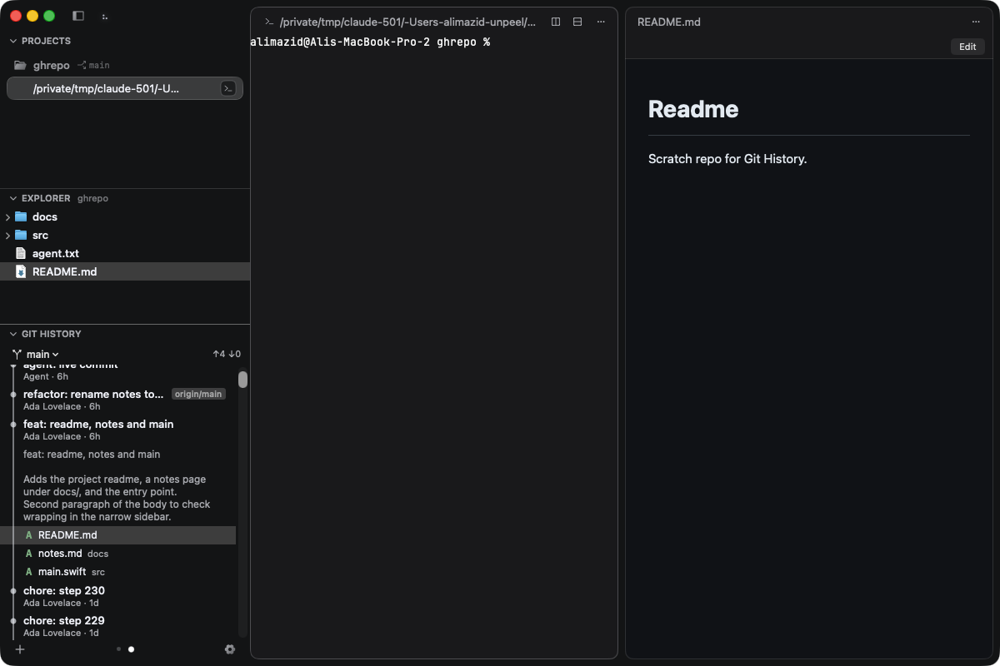
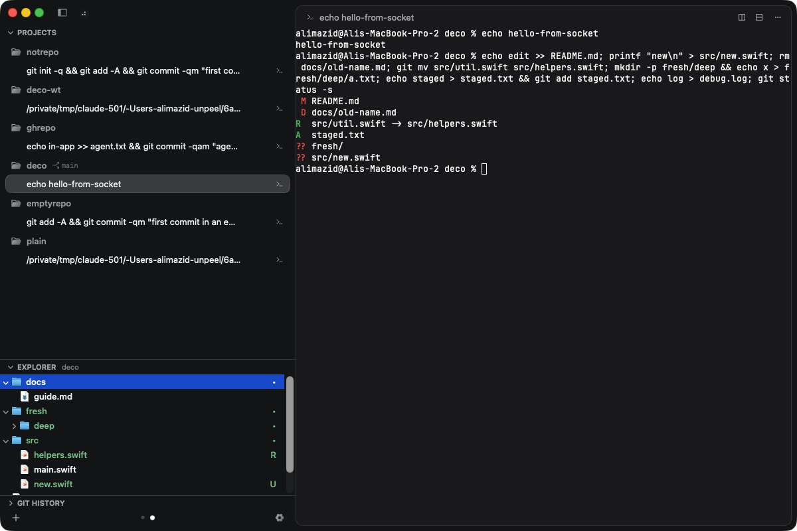
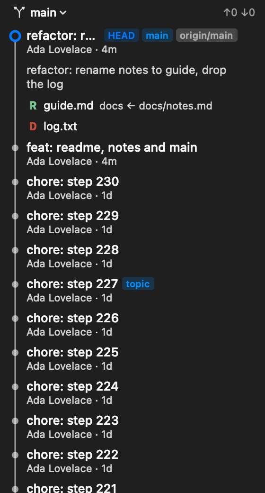
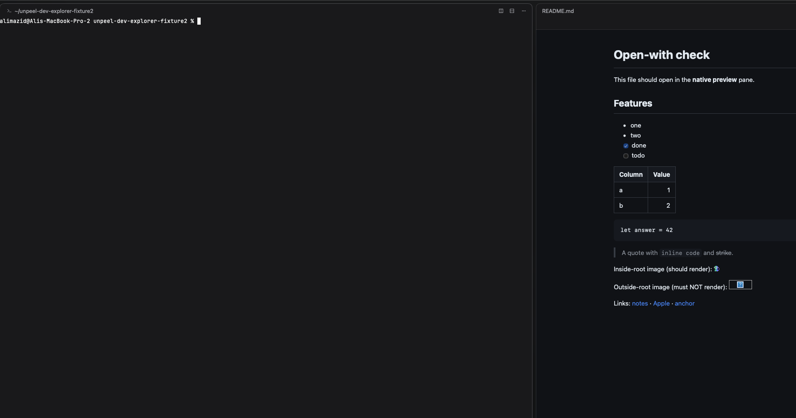

Follow a nested repository
Working from a parent folder? Choose a repository inside it. Explorer decorations and Git history follow that same selection.
Your agent has a terminal. Now its files, commits, and documents have a place beside it.
This fork of Unpeel adds a native Explorer, Git history, and Markdown previews to the Mac workspace.
See what’s been added
View full screenshotBuilt on Unpeel’s durable agent sessions
The additions below are from alimazid/unpeel
01 / Explorer
Browse the active session’s files without leaving the workspace. The tree follows changes on disk and shows Git status where you’re already looking.
Focus Explorer ⇧⌘E

Full captureCaptured before the date-modified column was added
See the file-collision prompt02 / Git history
A history pane that stays with your session. Expand a commit to read its message and changed files, then open a file in the working tree.
Filter by a local branch, a remote-tracking branch, or all branches. Keep the checked-out branch and its ahead/behind counts in view.
See the author, commit message, refs, and changed-file list. Renames include the previous path.
Reveal it in Explorer. Markdown opens in a preview pane; other files follow the configured Open With behavior.
History is read-only. Opening a file shows the current working copy, not a historical revision. Ahead/behind counts reflect the last fetch.
Focus Git history ⌃⇧G

View full screenshot03 / Markdown previews
Open a Markdown file from Explorer or Git history. Keep the rendered document beside the live terminal, with headings, lists, tables, and code blocks you can actually read.

Full captureThe preview refreshes as the file changes. Relative Markdown links open in the preview; editing hands off to the configured editor.
Resize or collapse the Projects, Explorer, and Git history sections. Their sidebar layout is remembered across relaunches.
Markdown previews are read-only and temporary. They aren’t restored as terminal sessions.
Also in the fork
Working from a parent folder? Choose a repository inside it. Explorer decorations and Git history follow that same selection.
Completion notifications can include the program’s summary or a snippet of the agent’s final reply. When neither is available, the notification still says “Finished.”
Drag a file into a terminal to insert its relative path. Use your existing agents and the underlying Unpeel session model.
The source is the starting point
These additions live in Ali Mazid’s repository. Explorer and Git history currently operate on sessions hosted on the same Mac.
Open alimazid/unpeel